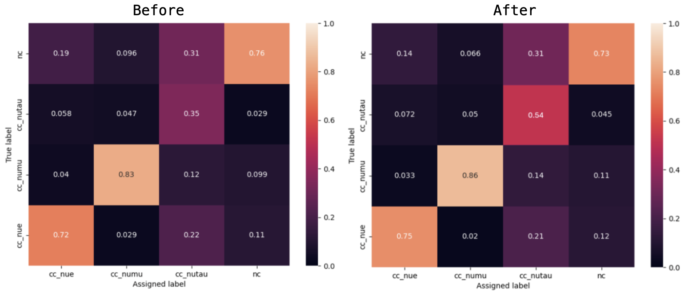
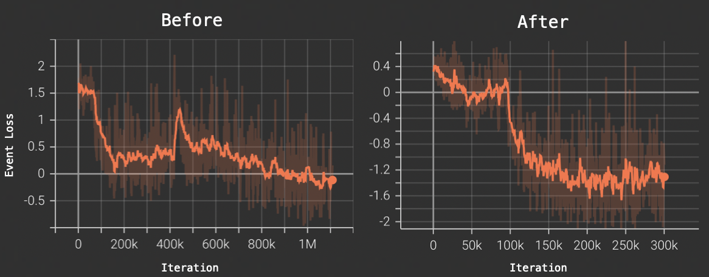
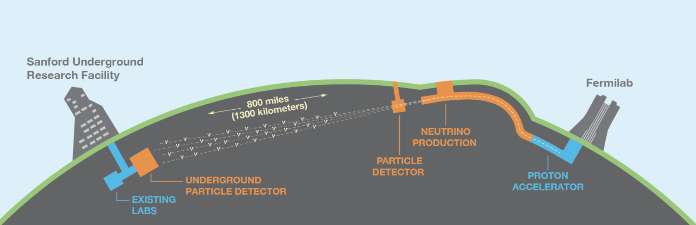

TL;DR
This project revolved around the development and training of a Graph Neural Network (GNN) used for the detection of tau ($\tau$) neutrinos -- one of the three flavours of neutrinos. See here for an introduction to the three flavor paradigm.The goal was to have the network distinguish between the three flavours of particles, and also provide sematic information of the decay products.
We began by training and testing the unmodified NuGraph2 GNN used for neutrino physics event reconstruction. This model is reported to perform extremely positively, provided a large and low variance dataset to be used for a very particular task.
In our implementation, however, the model performance was significantly reduced due to our heavily imbalanced an high variance dataset. In particular, the model was unable to distinguish between tau neutrinos and any other decay event.
To combat this, I implement a modified, weighted loss function which penalizes the model more strongly for mis-labelling tau neutrino data. Moreover, I modified the sampling techniques in order to over sample the tau data, increasing the model's exposure frequency to the decay events of interest. Finally, to increase the expressivity of the model, I increased it's depth from one fully connected layer to two. This allowed the model to gain a more nuanced understanding of the sematic behaviour of the tau neutrino decay products.
My modifications significantly improved the model's ability to correctly classify tau neutrinos -- in particular, we saw a 20% increase in true positive classification of tau neutrinos, while maintaining or increasing the performance on all other classifications. See the comparison between precision matrices bellow:

The quantities of main interest in the above comparison are the discrepancies between the anti-diagonal values, particularly the cc_nutau entry.
In addition to increasing the performance of the model, my contributions resulted in a loss plateau after many fewer training iterations. See the loss curves both before and after the architectural modifications:

DUNE Physics Project
The Deep Underground Neutrino Experiment (DUNE) is an international experiment for exploration of neutrino physics. Central to DUNE are a high-intensity neutrino beam, a near detector providing initial energy spectra measurements, and a far detector for detailed interaction reconstruction, located 1300 km away underground. A schematic diagram highlighting the main hardware components of the experiment is included bellow.
The far detector comprises four liquid argon time projection chamber modules, facilitating precise event reconstruction, with two modules utilizing single-phase technology and one utilizing dual-phase, while the fourth remains under development. The near detector serves as the control, minimizing systematic errors and uncertainties in neutrino interaction reconstruction, crucial for accurately predicting far detector observations.
See here for an in-depth overview of the DUNE physics collaboration.